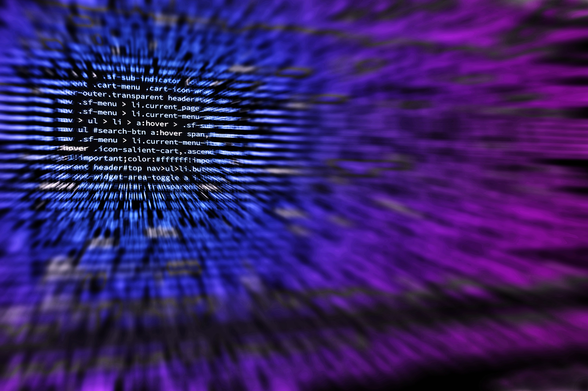

"Ik combineer HBO Personeel en Arbeid met MBO Software Engineering. Na een loopbaan binnen Personeel & Arbeid specialiseer ik mij in het maken van hybride apps en de besturing van slimme apparaten. Hierbij breng ik een mix van soft skills, projectmatig werken en hands-on programmeerkennis mee.
Ik bouw front-end (Ionic-Angular, HTML/CSS/JS), backends (C#, Python, SQL) en koppelingen tussen software en hardware (Arduino). Mijn focus ligt op het ontwikkelen van software die de fysieke en digitale wereld verbindt."